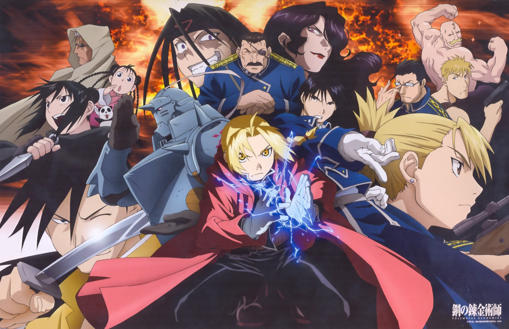

| FullMetal ALchemist Brotherhood |
|  |
|
Depois de perderem sua mãe, Alphonse e Edward Elric tentam trazê-la de volta usando uma técnica de alquimia proíbida. Contudo, o princípio básico da alquimia é a lei da "troca equivalente", e tentar ressucitar alguém custa muito alto. Ed perde sua perna, e Al perde seu corpo. Ed consegue selar a alma de Al dentro de uma grande armadura metálica, dando em troca seu braço. Anos depois, Ed (com dois membros de metal) e Al (ainda preso na armadura) deixam a sua cidade natal. Ed, que possui um talento nato para a alquimia, se torna um alquimista com certificado nacional, e logo passa a ser chamado de ‘fullmetal alchemist’. Mas o verdadeiro objetivo dos irmãos é encontrar a pedra filosofal, na esperança de recuperarem os seus corpos originais. Logo eles descobrem que essa mística pedra, que pode nem existir, é visada não só por eles, mas como muitas outras pessoas também. |
Gabriel Alves Sousa Silva | Senai - 2022